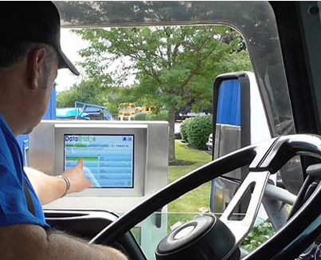

Keputusan harus dibuat oleh setiap pembeli timbangan,apa saja perlu diketahui sebelum berbicara dengan pemasok?
Ukuran, gaya, dan konfigurasi timbangan truk dapat bergantung pada kebutuhan pembeli. Namun, ada juga pilihan yang lebih subjektif. Bagian ini membahas beberapa perbedaan mendasar yang dapat membuat satu timbangan berbeda dari yang lain.
Skala Tim Proyek
Kumpulkan tim untuk proyek skala truk Anda:
Tim proyek internal
Ini harus mencakup orang-orang di dalam perusahaan Anda yang menangani fasilitas, operasi, lalu lintas, sistem komputer, dan keuangan.
Pemasok skala.
Hubungi calon pemasok lebih awal. Mereka dapat memberi Anda saran yang baik dan membantu Anda melewati proses tersebut. Mereka juga dapat merekomendasikan orang yang berpengalaman untuk posisi lainnya. Pemasok timbangan kemungkinan akan menjadi orang yang memasang dan menguji timbangan Anda. Dalam beberapa kasus, mereka dapat melakukan kalibrasi awal, kecuali pedoman berat dan ukuran setempat mengharuskan hal itu dilakukan oleh badan pemerintah.
Kontraktor umum.
Kontraktor biasanya akan menyiapkan lokasi dengan memasang fondasi dan pendekatan, membangun jalan dan area parkir, mendirikan rumah timbangan, dan menjalankan utilitas yang dibutuhkan. Dapatkan rekomendasi dari pemasok timbangan dan orang lain di area Anda yang telah memasang timbangan selama beberapa tahun terakhir. Dalam beberapa kasus, pemasok timbangan Anda dapat menyediakan layanan kontrak umum.
Engineer
Pemerintah daerah Anda mungkin mengharuskan seorang insinyur sipil untuk mensertifikasi rencana pondasi timbangan Anda, dan komponen lainnya. Tanyakan kepada pemasok timbangan Anda tentang persyaratan lokasi Anda.
Bicaralah dengan calon pekerja untuk posisi ini lebih awal. Kenali mereka dan pilih orang yang dapat melakukan pekerjaan terbaik dan yang dapat bekerja sama dengan Anda dengan nyaman. Kiat-kiat tentang memilih pemasok skala yang baik disertakan dalam panduan ini. Setelah anggota tim dipilih, perkenalkan mereka satu sama lain dan buka jalur komunikasi.
Mengevaluasi Pemasok Skala
Pembeli skala besar biasanya mempersempit jumlah calon pemasok mereka menjadi dua atau tiga. Pada saat itu, akan bermanfaat untuk meminta staf penjualan mengajak Anda mengunjungi lokasi terdekat dengan skala yang mirip dengan model yang Anda pertimbangkan. Tim internal Anda mungkin ingin menemani Anda. Mintalah untuk melihat lokasi yang telah memiliki skalanya selama jangka waktu yang cukup lama. Kunjungan ke lokasi dapat memberikan wawasan tentang pengalaman kepemilikan yang sebenarnya.
You may find it helpful to ask specific questions about:
• Pemeliharaan – Standar pemeliharaan preventif apa yang diperlukan?
• Waktu henti yang tidak direncanakan – Berapa banyak waktu henti yang telah dialami? Apakah mereka perlu mengganti Load Cells atau komponen lainnya? Apakah perbaikan segera dilakukan oleh penyedia layanan?
• Kalibrasi – Berapa lama waktu yang dibutuhkan?
Akhirnya, Anda akan meninjau kontrak dan pesanan pembelian. Baca semua dokumen sebelum Anda menandatanganinya untuk memastikan Anda memahami isinya. Pemisahan layanan, produk, dan harga merupakan bentuk seni. Fitur dan layanan yang menurut Anda seharusnya standar dapat dianggap sebagai tambahan biaya oleh pihak lain. Pastikan bahwa cakupan pasokan oleh semua pemain sesuai dengan yang Anda harapkan. Selama proses penawaran, pastikan bahwa semua calon vendor memberikan penawaran dengan spesifikasi dan kemampuan yang sama.
Ukuran Skala
Dek jembatan timbang Anda harus mampu secara fisik menampung jejak truk terbesar yang Anda rencanakan untuk ditimbang. Ukuran kendaraan dapat bervariasi di seluruh dunia, tetapi sebaiknya Anda mempertimbangkan kebutuhan Anda dengan baik untuk masa mendatang karena timbangan yang dibuat dengan baik dapat bertahan 10 hingga 20 tahun. Pertimbangkan kemungkinan menggunakan kendaraan yang lebih besar di masa mendatang daripada yang Anda gunakan saat ini.
Banyak produsen timbangan akan menawarkan jembatan timbang berukuran standar, tetapi juga menerima dimensi khusus. Jika Anda mengganti timbangan yang sudah ada dan menggunakan fondasi yang sudah ada, Anda akan memerlukan timbangan baru yang sesuai dengan dimensi tersebut. Dalam kasus tersebut, sering kali perwakilan perusahaan timbangan akan mengunjungi lokasi untuk melakukan pengukuran sebelum timbangan diproduksi.
Panjang
Dalam aplikasi yang mengharuskan Anda menimbang seluruh truk, timbangan truk Anda harus cukup panjang untuk menahan semua roda truk terpanjang yang ingin Anda timbang. Biasanya, panjangnya 18-24 m (60-80 kaki) untuk traktor-semi-trailer, dan hingga 30 m (100 kaki) untuk trailer ganda. Panjang maksimum keseluruhan trailer traktor di jalan raya biasanya diatur oleh otoritas regional/negara bagian/provinsi.
Lebar
Timbangan truk pada umumnya memiliki lebar rata-rata 3-3,5 m (10-11 kaki). Timbangan yang lebih lebar dapat memudahkan manuver truk ke timbangan. Tren terkini adalah banyak pelanggan memilih timbangan yang lebih lebar daripada yang biasa digunakan di masa lalu.
Konfigurasi Skala
Ada tiga konfigurasi utama timbangan yang dapat digunakan untuk menimbang kendaraan di jalan raya: timbangan poros tunggal, timbangan truk penuh, dan timbangan poros ganda. Gaya yang paling sesuai untuk Anda bergantung pada jenis informasi berat yang Anda perlukan untuk aplikasi dan persyaratan hukum Anda.
Skala poros tunggal biasanya terdiri dari modul skala tunggal, atau platform, yang cukup besar untuk menampung satu set as truk. Alasan utama fasilitas memilih konfigurasi ini adalah biaya; skala yang lebih kecil ini jauh lebih murah daripada skala yang menampung seluruh truk. Dengan menimbang setiap set as secara terpisah, skala ini dapat memberikan perkiraan berat total truk. Namun, metode ini tidak cukup akurat untuk digunakan dalam aplikasi yang sah untuk diperdagangkan (sebenarnya, metode ini dapat meleset hingga 450 kg, 1000 lbs, atau lebih). Skala ini terutama digunakan untuk memeriksa kepatuhan terhadap batas jalan raya maksimum.
Timbangan truk penuh adalah jembatan timbang yang biasanya terdiri dari beberapa modul, atau bagian dek, yang dihubungkan bersama-sama dengan panjang yang cukup untuk menampung seluruh truk. Ini adalah jenis timbangan truk yang paling umum, karena sebagian besar persyaratan hukum untuk perdagangan menetapkan bahwa seluruh truk harus ditimbang sekaligus.
Timbangan truk multi-poros tampak sangat mirip timbangan truk penuh tetapi dengan satu perbedaan utama. Alih-alih modul yang saling terhubung dan Load Cells bersama, setiap modul atau set modul memiliki sel bebannya sendiri. Hal ini memungkinkan modul atau set atau modul ini beroperasi sebagai timbangan terpisah. Timbangan dapat menyediakan berat penuh seluruh truk dan memungkinkan pengguna untuk melihat berat setiap poros atau kelompok poros. Timbangan ini lebih mahal daripada timbangan truk penuh karena memerlukan Load Cells tambahan dan perangkat keras terkait. Bergantung pada jenis truk yang ditimbang, timbangan mungkin hanya dapat menyediakan berat poros individual dalam satu arah perjalanan karena panjang dan konfigurasi modul.
Konstruksi Dek – Baja vs. Beton
Dek merupakan permukaan atas jembatan timbang. Ini adalah bagian tempat ban truk menggelinding. Pada sebagian besar timbangan, Anda dapat memilih antara permukaan dek baja atau beton. Dek baja dan beton harus memberikan kinerja penimbangan yang sama karena keduanya dibuat dengan spesifikasi desain yang sama. Namun, ada beberapa perbedaan yang dapat membuat satu jenis dek lebih menguntungkan untuk lokasi atau aplikasi Anda.
Dek baja
Dek baja dibangun di pabrik dan biasanya dilas ke sistem internal balok atau komponen struktural. Dek baja siap dioperasikan segera setelah pemasangan selesai. Karena sepenuhnya dibangun di pabrik, hanya ada sedikit variabel untuk kinerja. Sebagian besar dek baja menggunakan pelat tapak berpola berlian sebagai permukaan penggerak. Ini membantu traksi saat permukaan basah. Beberapa pengguna lebih menyukai traksi beton di lingkungan basah atau bersalju, tetapi dalam kebanyakan kasus, traksi penggerak dengan pelat tapak berpola sebanding dengan beton. Namun, lalu lintas pejalan kaki mungkin mengalami traksi basah yang lebih baik dengan dek beton dibandingkan dengan baja.
Dek beton
Timbangan dek beton adalah struktur baja yang di dalamnya beton dituangkan selama pemasangan untuk membuat permukaan jalan. Pemasok timbangan membangun semua komponen struktural dan tulangan yang dibutuhkan, dan beton kemudian biasanya dituangkan oleh kontraktor pihak ketiga berdasarkan spesifikasi pemasok timbangan. Beton memerlukan waktu hingga 30 hari untuk mengeras sepenuhnya sebelum truk dapat melaju di timbangan.
Saat mempertimbangkan biaya timbangan dek beton, pastikan untuk memasukkan biaya beton dan layanan pengecoran. Dek beton memiliki berat statis yang jauh lebih tinggi daripada baja, yang mungkin juga memerlukan fondasi yang lebih kokoh, sehingga menambah biaya. Jika mempertimbangkan semua hal, harga antara timbangan dek beton dan timbangan dek baja dapat dibandingkan.
Beberapa produsen akan menawarkan dek beton yang dituang dari pabrik. Ini menghilangkan kebutuhan untuk waktu pengerasan di lokasi. Namun, timbangan ini rentan terhadap kerusakan beton selama pengangkutan. Mereka juga jauh lebih berat daripada yang tidak dituang, sehingga lebih mahal untuk diangkut – terkadang membutuhkan dua truk, bukan satu. Mereka juga mungkin memerlukan derek yang lebih besar untuk memasangnya. Jika Anda mempertimbangkan opsi ini, pastikan Anda memahami bagaimana hal ini memengaruhi biaya proyek Anda.
Secara keseluruhan, dek beton dapat menawarkan keuntungan, khususnya untuk truk skala kecil. Karena memiliki massa sekitar empat kali lipat dari baja, dek beton lebih mampu menahan gaya longitudinal yang disebabkan oleh roda penggerak truk selama akselerasi. Dek beton juga menyediakan permukaan yang kuat dan seragam untuk penggunaan trailer saja dalam aplikasi pengisian massal. Roda stasioner trailer dapat diturunkan di mana saja di dek beton dan mendapatkan semua dukungan yang dibutuhkan untuk pemuatan titik tinggi.
Ketahanan terhadap korosi merupakan pertimbangan tersendiri. Baja merupakan pilihan yang lebih baik untuk beberapa bahan korosif, sedangkan beton lebih disukai untuk bahan korosif lainnya. Pemasok timbangan Anda dapat memberikan rekomendasi untuk aplikasi Anda.
Pondasi Lubang vs. Desain Sisi Terbuka (Tanpa Lubang)
Anda perlu memutuskan apakah Anda menginginkan timbangan lubang atau timbangan tanpa lubang. Timbangan lubang, seperti namanya, dibangun di atas galian, dan permukaan platform penimbangan rata dengan tanah. Dulu, semua timbangan truk memerlukan lubang yang dalam karena harus menampung tuas besar dan sistem suspensi. Saat ini, timbangan mekanis tersebut sudah kuno, sehingga lubang yang dalam menjadi pilihan.
Bahkan jika lubang galian digunakan, persyaratan kedalamannya bersifat subjektif, meskipun kedalaman lubang galian dapat memengaruhi kemudahan prosedur perawatan dan servis. Ini karena lubang galian yang terlalu dangkal dapat menyisakan sedikit ruang bagi personel servis. Namun, perlu diketahui bahwa kedalaman lubang galian dapat ditetapkan oleh otoritas pengukuran dan berat setempat di beberapa daerah. Mereka juga dapat menetapkan ukuran lubang got.
Timbangan tanpa lubang, atau sisi terbuka, dibuat dari tingkatan dan memiliki profil sekitar 28-51 cm. (11-20 in.). Timbangan ini mungkin memiliki satu atau kedua sisi terbuka.
Meskipun pilihan antara pemasangan lubang atau tanpa lubang sering kali didasarkan pada preferensi, ada beberapa contoh yang mungkin memerlukan penggunaan lubang. Salah satunya adalah ketika Anda tidak memiliki cukup ruang fisik untuk membangun jalan landai ke permukaan dek timbangan tanpa lubang yang ditinggikan dan masih menyediakan ruang manuver yang cukup untuk truk setelah keluar dari timbangan. Selain itu, beberapa persyaratan keselamatan industri dapat membuat timbangan lubang lebih praktis, karena tidak ada kemungkinan truk melaju keluar dari tepi timbangan.
Situasi lain yang memerlukan lubang adalah ketika Anda menghadapi batasan ketinggian. Misalnya, katakanlah timbangan baru Anda akan digunakan untuk mengontrol proses pengisian massal. Struktur pengisian di atas mungkin sudah ada dan tidak dapat dipindahkan. Ketinggian maksimum yang diizinkan dari dek timbangan berada di permukaan tanah, dan satu-satunya tempat yang bisa dituju adalah ke bawah.
Namun, beberapa situs menemukan bahwa desain sisi terbuka lebih mudah dimiliki karena sejumlah alasan:
Akses – Lubang dapat memerlukan titik akses atau "lubang got" di jembatan timbang atau fondasi timbangan agar petugas pemeliharaan dapat merangkak di bawah timbangan dan memeriksa komponen penting. Di sisi lain, sebagian besar timbangan tanpa lubang hanya memerlukan pelepasan panel pelindung untuk mengakses Load Cells timbangan dan sering kali tidak memerlukan perjalanan di bawah dek timbangan.
Drainase – Sebuah lubang akan mengharuskan drainase air hujan/salju dipertimbangkan dalam desainnya. Biasanya ini akan memerlukan penggunaan pompa pembuangan dan bah, yang merupakan satu sistem lagi yang pada akhirnya akan memerlukan servis atau penggantian. Timbangan sisi terbuka memungkinkan air keluar secara alami.
Keamanan – Bergantung pada persyaratan keamanan fasilitas dan wilayah Anda, memasuki lubang untuk layanan rutin dapat memerlukan protokol khusus. Karena sering diklasifikasikan sebagai "ruang terbatas", persyaratan keselamatan dapat mencakup penggunaan sabuk pengaman, lift kabel, monitor kualitas udara, dan banyak lagi. Di beberapa pabrik kimia, lubang dapat mengumpulkan gas yang lebih berat dari udara, sehingga menimbulkan bahaya yang unik. Karena timbangan sisi terbuka biasanya tidak memerlukan tempat untuk masuk ke bawah timbangan, persiapan keselamatan yang diperlukan pun lebih sedikit.
Lainnya – Lubang cenderung menampung serpihan, sampah, tumpahan produk, dan lumpur. Lubang sulit dibersihkan, dan dapat menjadi tempat tinggal yang sempurna bagi hama dan hewan pengerat.
Timbangan Truk Portabel
Dalam beberapa situasi, Anda mungkin perlu menimbang kendaraan untuk jangka waktu terbatas. Lokasi yang melakukan konstruksi, penebangan, atau pengumpulan material di lokasi mungkin memerlukan timbangan truk portabel.
Alih-alih pondasi beton yang dibuat khusus, timbangan portabel menggunakan rangka baja yang biasanya dibaut menjadi beberapa bagian. Rangka tersebut mencakup lokasi pemasangan untuk Load Cells tempat dek timbangan diletakkan. Timbangan ini hampir selalu menggunakan dek baja, karena lebih mudah dipindahkan dari satu lokasi ke lokasi lain. Dalam kebanyakan kasus, timbangan dirancang untuk dibongkar sebagian untuk dipindahkan hanya dengan melepas baut pada bagian rangka dan struktur dek. Derek kemudian dapat digunakan untuk mengangkat bagian tersebut sesuai kebutuhan.
Timbangan portabel biasanya memiliki panduan khusus untuk persiapan lokasi – termasuk tanah atau kerikil yang dipadatkan, atau, jika memungkinkan, beton. Pelanggan mungkin bertanggung jawab untuk memastikan permukaannya memadai. Pendekatan timbangan, atau tanjakan, dapat disertakan dengan timbangan. Sering kali, ini harus sesuai dengan peraturan khusus yang ditetapkan oleh otoritas pengukuran dan bobot di wilayah Anda.
Selain itu, pedoman berat dan ukuran di beberapa daerah akan memiliki persyaratan penggunaan khusus untuk timbangan portabel. Misalnya, mereka mungkin mengharuskan timbangan portabel dipindahkan pada interval tertentu (misalnya 6 bulan).
Skala Antarmuka dan Manajemen Data
Timbangan masa kini dapat memanfaatkan teknologi modern untuk menyederhanakan proses bisnis dan transaksi dengan mengumpulkan informasi berikut:
• Jenis material • Harga • Berat truk (tara) • Berat bersih • Nomor pelanggan/akun • Kontrak pembelian • Informasi pengangkut pihak ketiga • Nomor identifikasi pengemudi • Nomor identifikasi truk • Biaya tambahan, biaya, pajak • Mutu material • Asal material
Untuk mencapai hal ini, pemasok timbangan biasanya menyediakan tiga tingkat umum manajemen data untuk timbangan truk. Beberapa fitur mungkin berbeda-beda berdasarkan produsen. Fitur-fitur tersebut meliputi terminal timbangan, perangkat lunak timbangan dasar, dan perangkat lunak timbangan canggih atau yang disesuaikan.
Indikator/Terminal Skala Kendaraan
• Menampilkan nilai berat • Melakukan transaksi sederhana dengan berat bruto, tara, dan neto • Menyimpan berat tara untuk menghitung berat neto
Fitur opsional
• Menghitung akumulasi sederhana, misalnya, tonase harian per truk atau komoditas • Mengeluarkan data ke printer, tampilan jarak jauh, atau perangkat periferal lainnya • Menyimpan data terbatas dan informasi transaksi • Menawarkan diagnostik mandiri • Mengontrol sistem lalu lintas • Mengoperasikan beberapa timbangan dengan satu unit
Perangkat Lunak Skala Kendaraan Dasar
• Berinteraksi dengan terminal timbangan untuk mengontrol timbangan, lampu lalu lintas, loop, dan gerbang/pagar • Menyediakan transaksi penimbangan satu lintasan, dua lintasan, dan multi lintasan • Menawarkan basis data dengan tabel untuk menyimpan informasi tentang kendaraan, produk, akun, dll. • Mengonfigurasi laporan dan tiket • Menghitung harga lanjutan • Mempercepat transaksi dengan informasi prasetel dan grup • Mengimpor dan mengekspor data
Perangkat Lunak Skala Kendaraan Canggih dan/atau Disesuaikan
• Mengontrol beberapa timbangan • Melakukan transaksi lanjutan: pemeriksaan kredit, pemeriksaan berat kendaraan, pengambilan sampel produk • Dikonfigurasi untuk beberapa pengguna dalam satu jaringan • Menghitung transaksi dari jarak jauh melalui peramban web • Menyinkronkan data di antara beberapa situs yang terhubung dalam jaringan
Sebagian besar pemasok menawarkan berbagai solusi dalam ketiga kategori tersebut. METTLER TOLEDO menawarkan berbagai opsi terminal mulai dari dasar hingga lanjutan. Opsi ini serupa dengan perangkat lunak – METTLER TOLEDO menawarkan rangkaian perangkat lunak DataBridge™ mulai dari versi standar hingga penawaran yang sepenuhnya disesuaikan. Mitra pemasok yang baik harus mendengarkan kebutuhan Anda dan menyajikan opsi praktis untuk pengelolaan data yang efektif.
Penimbangan Tanpa Pengawasan
Semakin banyak situs yang mempertimbangkan perangkat keras yang memungkinkan pengemudi truk memproses transaksi penimbangan mereka sendiri. Kemampuan ini dapat menjadi ideal untuk timbangan yang beroperasi sepanjang waktu atau yang memproses transaksi berulang. Dengan terminal pengemudi tanpa pengawasan, Anda berpotensi menghilangkan biaya membangun rumah timbangan di samping timbangan dan mempekerjakan operator timbangan yang bertugas. Terminal pengemudi tanpa pengawasan umumnya menawarkan fitur-fitur berikut:
• Card/RFID reader for quickly identifying drivers/vehicles • Display for prompting drivers to enter data • Keypad/keyboard or touch screen for entering data • Ticket printer
Fitur opsional meliputi:
• Jaringan nirkabel • Kemampuan interkom suara (standar atau voice-over-IP) • Sistem kamera untuk pemantauan jarak jauh, Jika opsi ini tampaknya tepat untuk fasilitas Anda, tanyakan kepada calon pemasok timbangan tentang terminal tanpa pengawasan dan program perangkat lunak untuk menjalankannya.
Skalanya bisa sangat besar, tetapi ada sejumlah risiko dan kekurangan yang dapat membuat opsi ini hanya layak untuk beberapa orang saja:
Meskipun panduan ini ditujukan untuk membahas pembelian timbangan kendaraan baru, sering kali tersedia juga pilihan timbangan bekas. Penghematan biaya dengan timbangan baru bisa sangat besar, tetapi ada sejumlah risiko dan kekurangan yang dapat membuat pilihan ini hanya layak untuk beberapa orang saja:
• Ukuran jembatan timbang tidak dapat diubah, karena akan merusak integritas struktural dan membatalkan sertifikasi bobot dan pengukuran apa pun. Jadi, fondasi perlu dibangun sesuai ukuran jembatan timbang yang ada, yang mungkin tidak optimal untuk aplikasi tersebut.
• Garansi akan batal, kecuali untuk komponen baru yang dipasang. Lihat Bagian 9 untuk informasi lebih lanjut tentang garansi.
• Kondisi keseluruhan sistem bersifat subjektif, dan kecuali timbangan masih terpasang dan beroperasi, mustahil untuk menguji sistem secara penuh.
Namun, banyak jembatan timbang yang dapat dimodifikasi agar dapat menerima sistem sel beban yang sama sekali baru. Bagi bisnis yang bersedia menerima penggunaan jembatan timbang bekas, ini dapat menawarkan kinerja seperti baru dengan biaya yang jauh lebih murah daripada membeli timbangan baru. Hal ini membawa kita ke topik terkait: Memutakhirkan timbangan yang sudah ada
Meningkatkan Skala yang Ada
Banyak jembatan timbang yang dapat dibuat untuk menerima Load Cells baru, bahkan dari produsen yang berbeda, dengan penggunaan perangkat keras pemasangan konversi baru. Bagi bisnis yang memiliki timbangan yang sudah ada, ini dapat memberikan pengembalian investasi yang besar dengan menghilangkan panggilan layanan yang sering atau akurasi yang dipertanyakan pada timbangan lama.
Peluang ini dimulai dengan perusahaan timbangan yang menawarkan peningkatan pada basis timbangan lama yang sudah terpasang. Peningkatan ini memberikan perpanjangan masa pakai untuk jembatan timbang dan fondasi yang masih kokoh secara struktural. Sejak saat itu, hal ini telah meluas ke perusahaan yang memasang sistem Load Cells mereka ke timbangan pesaing. Dari sudut pandang pelanggan, hal ini menawarkan keuntungan, yang memungkinkan mereka untuk menggunakan teknologi baru sambil memanfaatkan peralatan modal yang ada.
Karena proyek ini dapat memiliki banyak variabel, sebaiknya didiskusikan langsung dengan pemasok timbangan Anda. Di beberapa daerah, peraturan berat dan ukuran setempat dapat menetapkan apakah timbangan truk dapat ditingkatkan atau tidak.
Berikut ini adalah beberapa kriteria umum yang harus dipenuhi oleh timbangan yang ada agar dapat dianggap sebagai kandidat yang dapat diterima untuk peningkatan sistem Load Cells:
• Pondasi, Pondasi skala harus dalam kondisi baik dan kokoh secara struktural.
• Jembatan timbang, Jembatan timbang harus dievaluasi untuk mengetahui tanda-tanda kelelahan, korosi, riwayat siklus, dll.
• Sistem pengecekan dan/atau suspensi Komponen-komponen ini harus tetap mampu berfungsi sebagaimana dirancang, dan dianggap sesuai dengan persyaratan sistem Load Cells yang baru.
• Aksesibilitas Skala yang ada harus memungkinkan akses fisik yang memadai bagi teknisi untuk melepas komponen lama dan memasang komponen baru jika diperlukan.
Video: Peningkatan Timbangan Truk, Lihat video tentang peningkatan timbangan truk di www.mt.com/UpgradeToPDX